こんにちは、Japan Developer Support Core チームです。
Xamarin.Forms アプリの User Interface (UI) テストを可能にするフレームワーク、Xamairn.UITest を皆様ご存じでしょうか？
-
Microsoft の Docs サイトや Developer Community サイトでは、よく「Xamarin.UITest クロスプラットフォームのテストプロジェクト」を利用したチュートリアルが紹介されていますね。
今日は、必要なライブラリや UI Test の構成の理解を深めるために、この「Xamarin.UITest クロスプラットフォームのテストプロジェクト」を利用せず全て手作りで、Xamarin.UITest を使用した Xamarin.Forms アプリの UI Test にチャレンジしてみましょう！早速ですが、本日のメニューはこちらです。
1. 環境の準備
2. テスト対象になる Xamarin.Forms アプリを作る
3. テスト対象の Xamarin.Forms アプリで、UI Test の準備をする
4. 作った Xamarin.Forms アプリをパッケージ化する
5. Xamarin.UITest プロジェクトを準備する
6. UI Test を実施する前提条件
Visual Studio 2019 (以降、VS2019) をご用意ください。
本記事では、Xamarin.Forms アプリや Xamarin.UITest モジュールの開発技法・コーディングについては詳しく言及していません。Xamarin.UITest を使用して Xamarin.Forms アプリの UI テストを行うために必要となるプロジェクト構成や、準備しておくべき設定、クラス、ソースコードのみを紹介します。
1. 環境の準備
はじめに、開発環境の端末の Windows に、以下の環境変数を追加しておきましょう。
(下記例では、C ドライブ配下へのインストールを前提としたパスの記載になっています。ご利用の開発環境の構成にあわせて、パスを変更してくださいね。)
ユーザー変数で OK ですよ！
変数 : JAVA_HOME
1 | C:\Program Files\Android\Jdk\microsoft_dist_openjdk_1.8.0.25 |
変数 : ANDROID_HOME
1 | C:\Program Files (x86)\Android\android-sdk |
変数 : Path に以下を追加
1 | %ANDROID_HOME%\tools |
次に Android SDK も、VS2019 の [ツール] – [ツールと機能を取得] から [Visual Studio インストーラー] を開いて、バージョンアップしておきましょう。
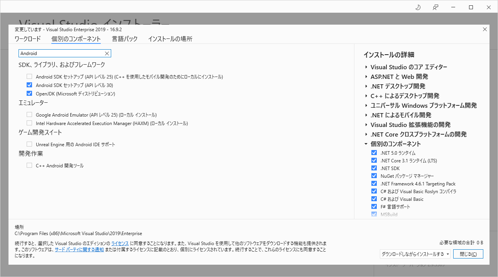
続いて、VS2019 の [ツール] -> [Android] -> [Android SDK マネージャー] から、プラットフォームとツールも揃えておきましょう。
＜プラットフォーム＞ 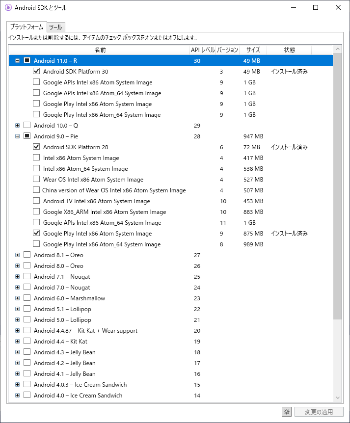
＜ツール＞ 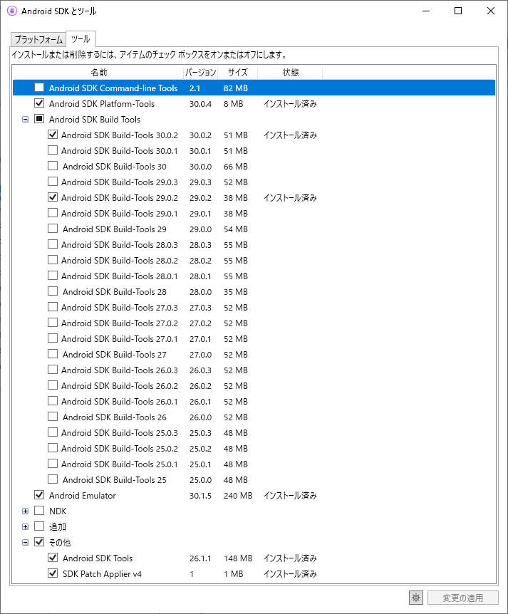
最後に Xamarin も、VS2019 の [ツール] – [ツールと機能を取得] から [Visual Studio インストーラー] を開いて、各コンポーネントを揃えておきましょう。
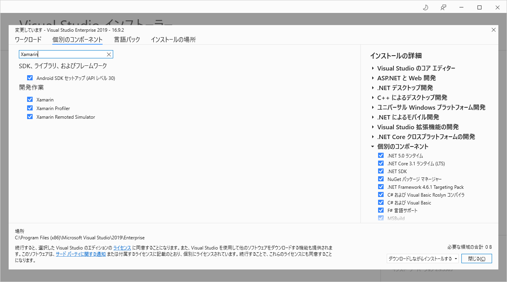
ここまでの作業で、だいたいの下拵えは完了です。
2. テスト対象になる Xamarin.Forms アプリを作る
それでは、テストのターゲットになる Xamarin アプリ本体を作っていきましょう。
VS2019 から [新しいプロジェクトの作成] で、「モバイル アプリ(Xamarin.Forms)」を選択します。
ここでは開発言語に「C#」をチョイスしました。
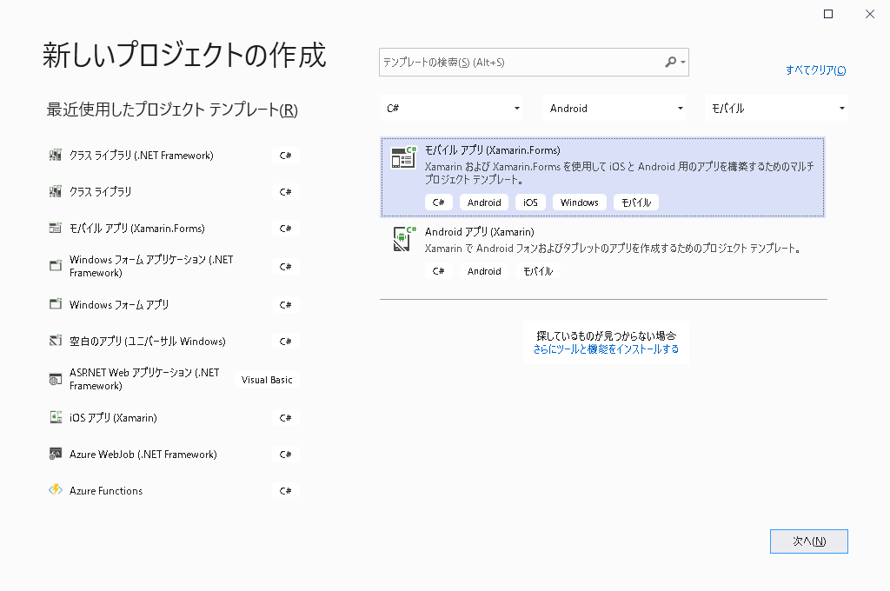
ここでは、プロジェクト名「MyXamarinFormsApp」、ソリューション名「MyXamarin」にしてみました。
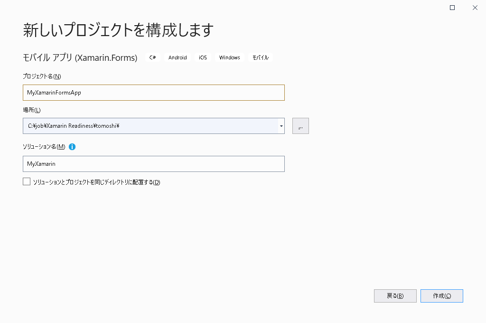
ウィザードの最後、アプリのテンプレートを選択する際は「空白」をチョイス、そして「予定している開発対象」には「Android」のみをセレクトしました。
今回の UITest は Android 一択でいきます！
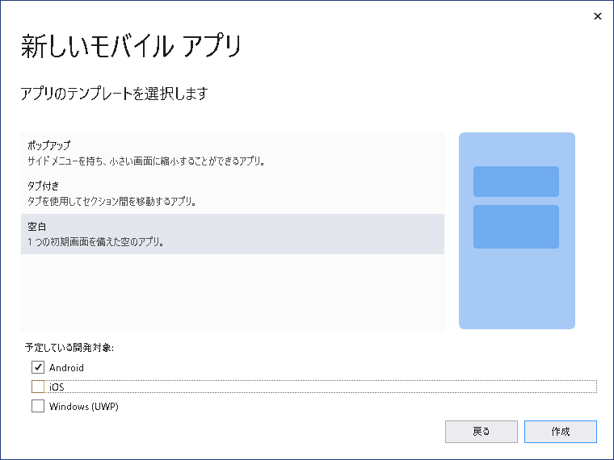
テストのターゲットになる Xamarin アプリ本体のプロジェクトと、そのソリューションが出来上がりました。
MyXamarinFormsApp プロジェクトが、アプリケーション固有の実装を含むプロジェクトで、MyXamarinFormsApp.Android プロジェクトが、デバイス (ここでは Android) 依存の実装を含むプロジェクトです。
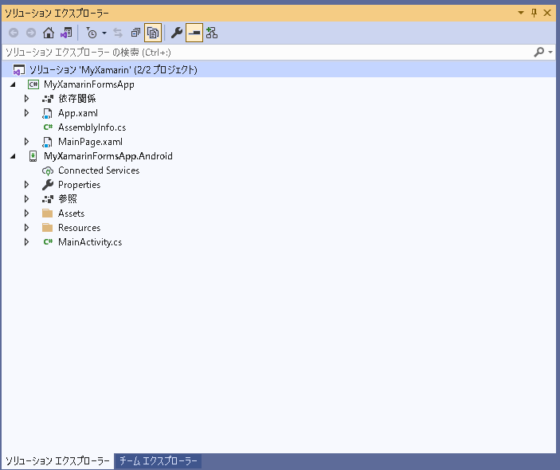
VS2019 のソリューション エクスプローラーから、各プロジェクトを右クリックして [NuGet パッケージの管理] を選択すると、それぞれどんな NuGet パッケージに依存しているかを確認できますよ。
＜MyXamarinFormsApp プロジェクト : アプリケーション固有の実装を含むプロジェクト＞
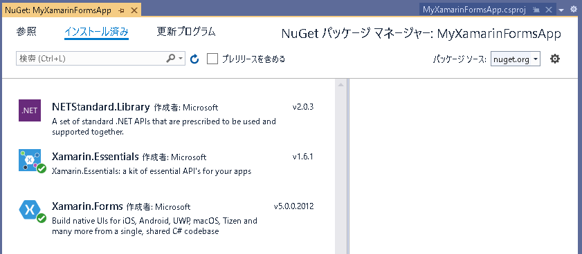
＜MyXamarinFormsApp.Android プロジェクト : デバイス (ここでは Android) 依存の実装を含むプロジェクト＞
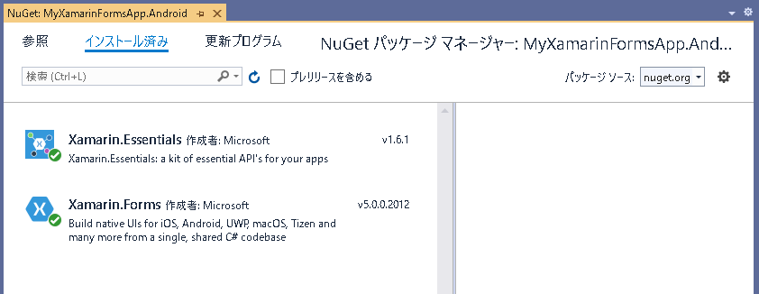
3. テスト対象の Xamarin.Forms アプリで、UI Test の準備をする
Xamarin.UITest では、ユーザーインターフェース (UI) のテスト対象となる各 UI 要素に対して、予め「AutomationId」を追加定義しておく必要があります。
詳しくは Microsoft Docs サイトをご照覧あれ。
Adding UITest support to Xamarin.Forms apps
今しがた作成したばかりの Xamarin.Forms アプリの場合は、メインの UI を MyXamarinFormsApp\MainPage.xaml で定義しているので、ここを編集しておきましょう。
ちょっと手を抜いて、ここでは新しく追加した Button と Label のみを UITest 対象として、それぞれ AutomationId を定義しました。// MyXamarinFormsApp\MainPage.xaml
1
2
3
4
5
6
7
8
9
10
11
12
13
14
15
16
17
18
19
20
21
22
23
24<?xml version="1.0" encoding="utf-8" ?>
<ContentPage xmlns="http://xamarin.com/schemas/2014/forms"
xmlns:x="http://schemas.microsoft.com/winfx/2009/xaml"
x:Class="MyXamarinFormsApp.MainPage">
<StackLayout>
<Frame BackgroundColor="#2196F3" Padding="24" CornerRadius="0">
<Label Text="Welcome to Xamarin.Forms!" HorizontalTextAlignment="Center" TextColor="White" FontSize="36"/>
</Frame>
<Label Text="Start developing now" FontSize="Title" Padding="30,10,30,10"/>
<Label Text="Make changes to your XAML file and save to see your UI update in the running app with XAML Hot Reload. Give it a try!" FontSize="16" Padding="30,0,30,0"/>
<Label FontSize="16" Padding="30,24,30,0">
<Label.FormattedText>
<FormattedString>
<FormattedString.Spans>
<Span Text="Learn more at "/>
<Span Text="https://aka.ms/xamarin-quickstart" FontAttributes="Bold"/>
</FormattedString.Spans>
</FormattedString>
</Label.FormattedText>
</Label>
<Button x:Name="b" AutomationId="MyButton" Text="Click me"/>
<Label x:Name="l" AutomationId="MyLabel" Text="Hello, Xamarin.Forms!" />
</StackLayout>
</ContentPage>ここまで実装が完了したら、一度ソリューションを Debug モードでリビルドしてみましょう！
リビルドをパスしたら、ついでに Android のエミュレーター (下記例では「Pixel 2 Pie 9.0 - API 28」) 上でデバッグ実行・アプリが起動するところまで確認しておくと安心です。
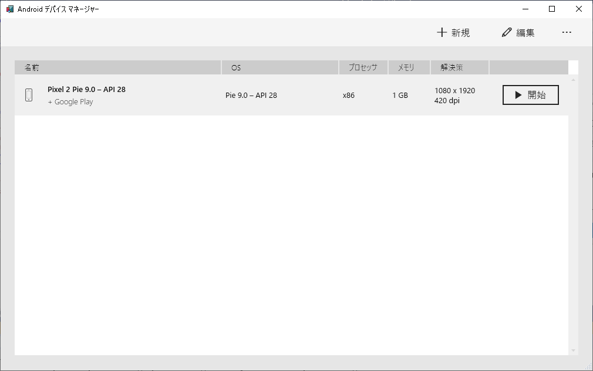
4. 作った Xamarin.Forms アプリをパッケージ化する
無事、UITest 準備を済ませた Xamarin.Forms アプリが出来上がったところで、今度はこのアプリをパッケージングしましょう。
因みに Android の場合は、拡張子「.APK」でパッケージングされますよ。
それでは早速、VS2019 のソリューション エクスプローラーから、デバイス (ここでは Android) 依存の実装を含むプロジェクト MyXamarinFormsApp.Android のプロパティを開いてください。
ここから少し力作業です、間違えないように気をつけながらブレードにリストアップされている各種設定を進めましょう！
| アプリケーション | |
|---|---|
| Android バージョンを使用したコンパイル (ターゲット フレームワーク) | 「Android 11.0 (Pie)」 |
| 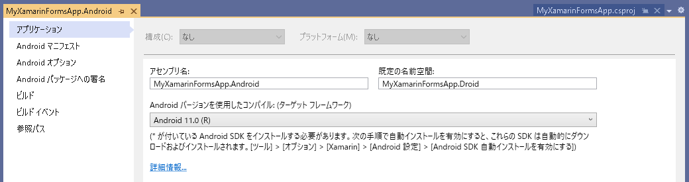 | |
| Android マニフェスト | |
|---|---|
| パッケージ名 | 「com.DSC.myxamarinformsapp」 |
| ターゲット Android バージョン | 「Android 9.0 (API レベル 28 - Pie)」 |
| 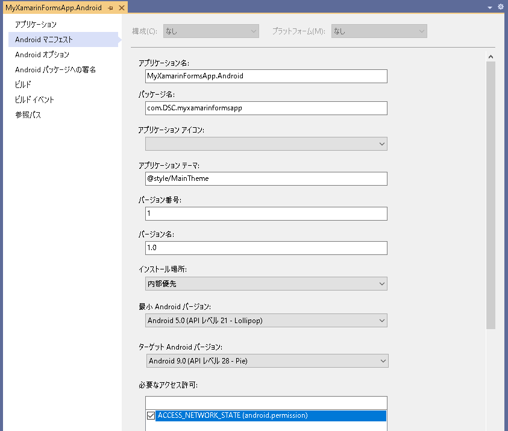 |
| Android オプション | |
|---|---|
| Android パッケージ形式 | 「apk」 |
| リンク中 | 「SDK アセンブリのみ」 |
| 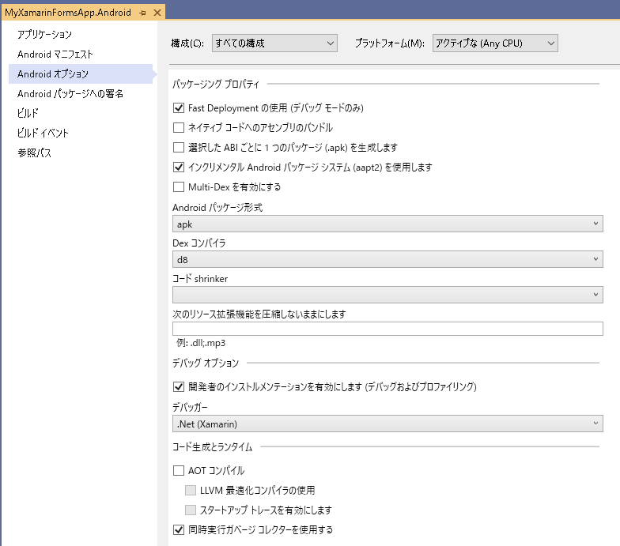 | |
| 画像が見切れちゃいました、すみません。。。 | |
| 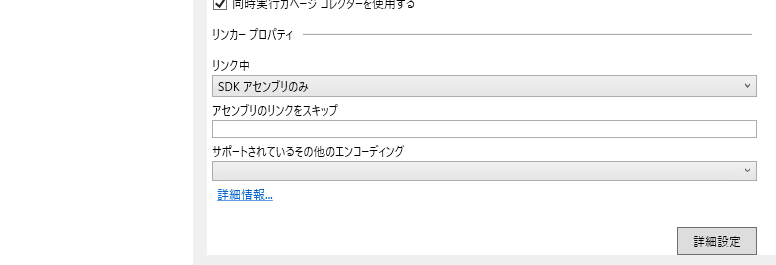 | |
| プロジェクトのプロパティ設定を済ませたら、いよいよパッケージを作成します。 | |
| VS2019 のソリューション エクスプローラーから、デバイス (ここでは Android) 依存の実装を含むプロジェクト MyXamarinFormsApp.Android を右クリックして [アーカイブ] を選択します。 | |
| アーカイブが成功すると、アーカイブマネージャーの画面から [フォルダーを開く] ボタンをクリックして、生成された .apk ファイルを確認できますよ。 | |
| 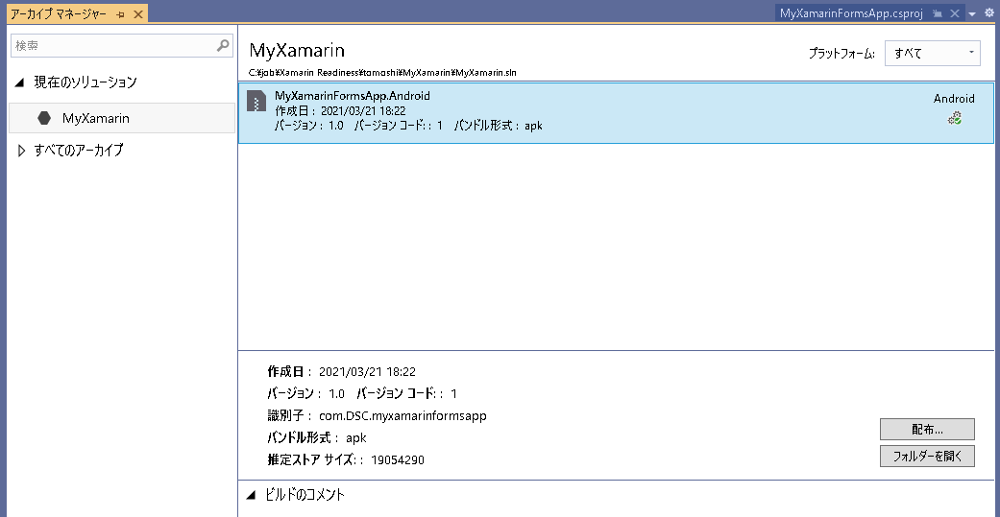 | |
| 割と深い階層にありますね、適宜見つけやすい場所にコピーしておくと良いかもしれません。 | |
| ここでは例として C:\TEMP フォルダ直下へコピーしておきましょう。 | |
| 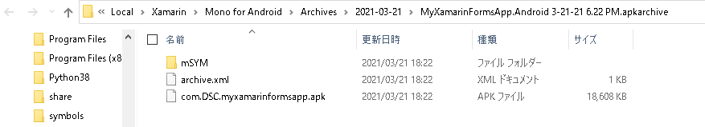 | |
| 【参考情報】 |
5. Xamarin.UITest プロジェクトを準備する
満を持して、Xamarin.UITest を使用した UI テストのプロジェクトを作っていくことにしましょう。
冒頭でもお伝えしたとおり、今回は「Xamarin.UITest クロスプラットフォームのテストプロジェクト」を利用せずに、全て手作りしていきますよ！
VS2019 のソリューション エクスプローラーから、ソリューションを右クリックして [追加] - [新しいプロジェクト] を選択します。
プロジェクト テンプレートには、C# クラス ライブラリ (.dll) を作成するためのプロジェクト「クラス ライブラリ (.NET Framework)」を選んでくださいね。
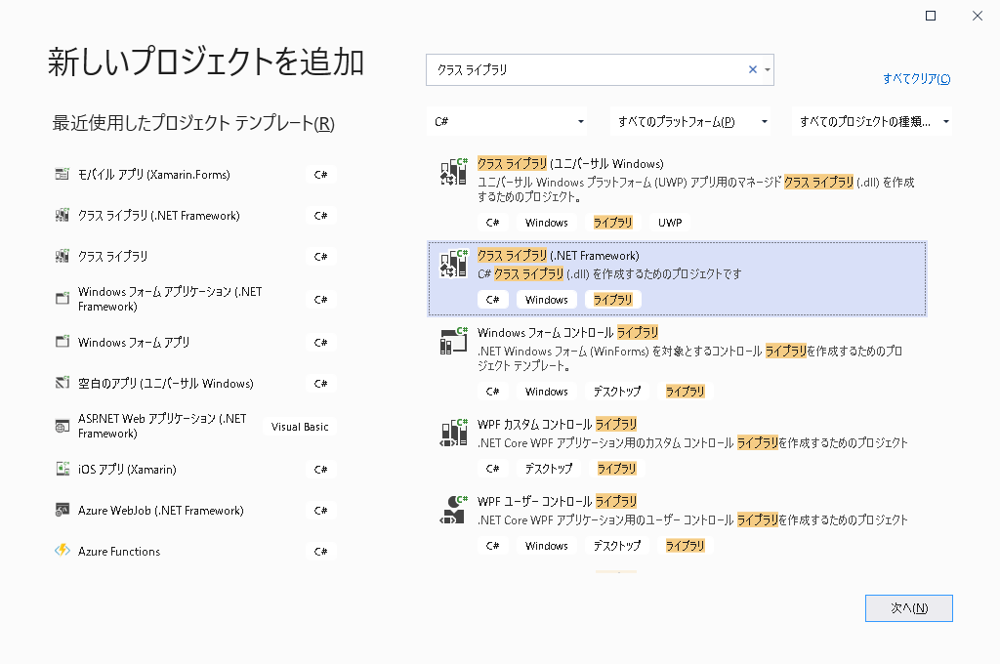
テスト モジュールになるプロジェクトが出来上がりました。
MyXamarinUITestDll プロジェクトが、Xamarin.UITest パッケージを使用して UI テストを行うテスト モジュールを含むプロジェクトです。
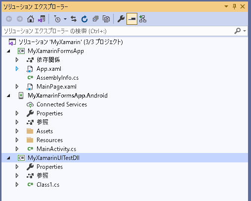
UI テスト モジュールのスケルトンが出来上がったところで、早速 UI テストのソースコードを実装していきましょう。
VS2019 のソリューションエクスプローラーから、UI テストを行うテスト モジュールを含むプロジェクト MyXamarinUITestDll を右クリックして、[追加] - [新しい項目] を選択し、「AppInitializer.cs」という名前の新しい C# クラスを作成します。
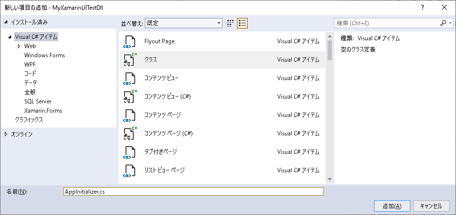
作成した新しい AppInitializer.cs を開いて、次のようにコードを実装します。
このクラスでは、このテスト モジュールの初期化処理を実装します。
StartApp() 内で呼び出している ConfigureApp メソッドに、先ほど作成したパッケージ ファイル (.APK) へのパスを指定するのを忘れずに。
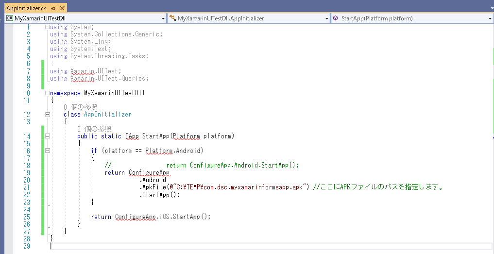
一見して、色々と using できていないエラーが散見されますが、これには後で対処しますので先ずはこのままでオッケーですよ！
※ コピペ用に、どうぞ。。。
1 | using System; |
続いて、この UI テスト モジュールで行うテスト コードを実装していきましょう。
VS2019 のソリューションエクスプローラーから、UI テストを行うテスト モジュールを含むプロジェクト MyXamarinUITestDll 配下に、既定という名のデフォルトで「Class1.cs」ファイルを右クリックして [名前の変更] を選択し、「Tests.cs」に編集します。
「ファイルの名前を変更しようとしています。このプロジェクトのコード要素 'Class1' への参照をすべて変更しますか？」と聞かれたら「はい」で進めてくださいね。
ファイル名とクラス名が変更された Tests.Cs を開いて、次のようにコードを実装します。
[SetUp] エリアの BeforeEachTest() 内で、先ほど実装した AppInitializer クラスの StartApp() を呼んでいますね。
そして [Test] エリアの WelcomeTextIsDisplayed() これが、このテスト モジュールで実装されているテスト メソッドになります。
ここではどんなテストをしているかというと、先ず 33 行目の IApp::WaitForElement() で "Welcome to Xamarin.Forms!" と表記されている UI 要素の表示を待機し、次に 34 行目の IApp::Screenshot() で現在表示されている画面のスクリーンショットを取得し、最後に 36 行目で、このテスト メソッドの実行結果が真 (True) でなければアサートしています。
(なおサンプル プログラムあるあるで、実際にこのテスト メソッドが実行されても results 値が True 以外の値になることはないため、IsTrue() メソッドによってアサートされることはありません。あしからず。)
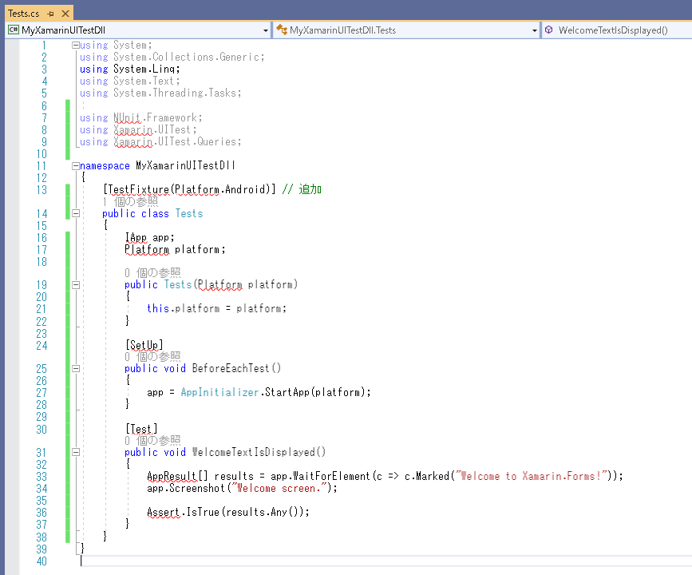
※ コピペ用に、どうぞ。。。
1 | using System; |
やっとコーディングが終わりましたので、先ほどから気になっていた「色々と using できていないエラー」に対処していきましょう。
VS2019 のソリューションエクスプローラーから、UI テストを行うテスト モジュールを含むプロジェクト MyXamarinUITestDll を右クリックして [NuGet パッケージの管理] を選択してください。
ここからまた、力仕事です・・・以下のパッケージを選択し、間違えないようにプロジェクトへインストールして追加していきましょう。
| パッケージ名 | バージョン |
|---|---|
| NUnit | v3.13.1 |
| NUnit3TestAdapter | v3.17.0 |
| Xamarin.UITest | v3.0.15 |
| 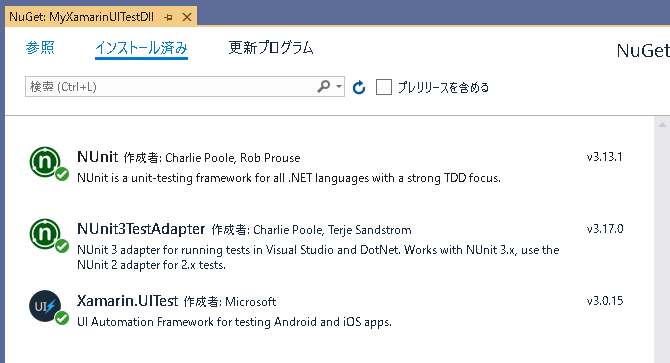 | |
| 全てのパッケージのインストールが完了すると、先ほどから気になっていた「色々と using できていないエラー」が全て解消されています。 | |
| VS2019 のソリューションエクスプローラーから、UI テストを行うテスト モジュールを含むプロジェクト MyXamarinUITestDll を右クリックして、[リビルド] しておきましょう。 | |
6. UI Test を実施する
それでは、いよいよ UITest を走らせてみましょう！
VS2019 の [ツール] - [Android] から [Android デバイスマネージャー] を起動し、ここでは先ほどもご覧いただいた「Pixel 2 Pie 9.0 - API 28」(Pie 9.0 - API 28) という Android OS を先に [開始] しておきます。
先にエミュレーターを開始しておくことで、テスト実行時にデバイスへの接続でタイムアウトが発生することを回避しやすくなりますよ。
エミュレーターによってデバイスが開始されてきたら、VS2019 のツールバーから [テスト] - [テスト エクスプローラー] を選択してテスト エクスプローラーを起動します。
テストエクスプローラーによって、現在のソリューションに含まれるテスト モジュールとテスト メソッドの検索が行われて、ツリー状に表示されます。
ソースコードのリンクから、実際のテスト メソッドが実装されているソースコードを参照することもできますよ。
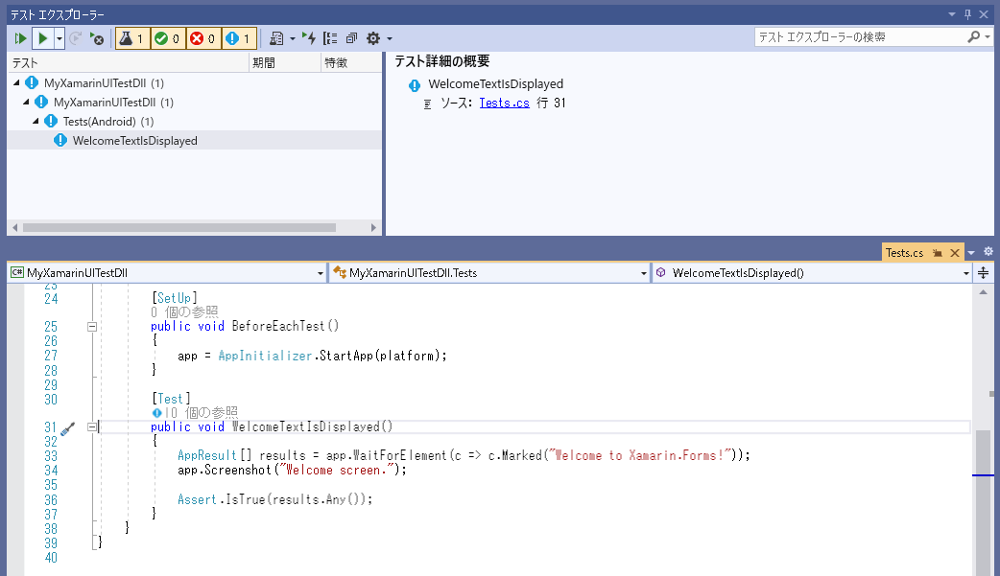
テスト エクスプローラーのツリーから、先ほど実装した WelcomeTextIsDisplayed を右クリックして [実行] すれば、テストの開始です。
エミュレーター上の Android デバイス上で、Xamarin.Forms アプリが起動され、起動されたアプリに Xamarin.UITest の UI テストモジュールがロードされて、[実行] したテスト メソッドが実行されます。
そしてテスト結果はご覧のとおり、当然ながらオールグリーンです！
お疲れさまでした！
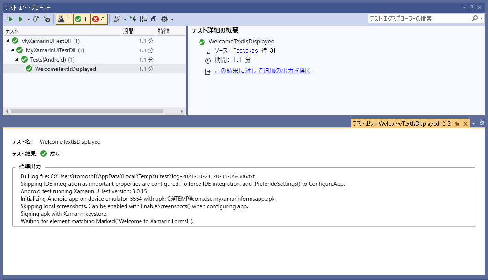
今回は、VS2019 上で Xamarin.Forms アプリとアプリのパッケージ、そしてアプリのパッケージの UI Test を行う Xamarin.UITest モジュールを作成して、実際に VS2019 のテスト エクスプローラーから UI Test を行うところまでの手順を一通りご紹介しました。
次回は、Visual Studio AppCenter 上で行う UI Test についてご紹介しようと思っています。
どうぞよろしくお願いします！
本ブログの内容は弊社の公式見解として保証されるものではなく、開発・運用時の参考情報としてご活用いただくことを目的としています。もし公式な見解が必要な場合は、弊社ドキュメント (https://learn.microsoft.com や https://support.microsoft.com) をご参照いただくか、もしくは私共サポートまでお問い合わせください。